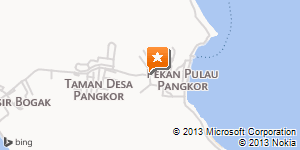

Dining (Food and Restaurant)
Pacific Terrace |
|
The Pacific Terrace is an intimate open terrace on a wooden deck, with stunning views of the sea.
A favourite for diners to watch the sky lighting up in fire as the sun set beyond the horizon.
Not to be missed is the abundance of fresh seafood : the "a la carte" menu according to the
guests' choice or to the chef's recommendations as well as the fine dining selection of international
and local flavours A wine list featuring some of the most prestigious and sophisticated wineries.
Open daily from 11.00am to 11.00pm. |
| |
|
Dinner for Two by the beach |
|
Nothing beats the allure of dining under the stars with the cool waves lapping on your feet.
Take advantage of this romantic setting with either a private BBQ or even a Western Set.
A 24-hour advance booking is required.
Open daily from 18.30 to 11.00pm. |
| |
|
Hornbill Restaurant |
|
Located on the ground level, overlooking the gardens and the Kingfisher pool, this
is an al-fresco dining venue, serving daily buffet breakfast and buffet dinners. Children's menu is available.
Opening Hours :
Breakfast from 6:30am to 10:30am
Dinner from 6:30pm to 10:00pm |
|

Pangkor Island Hotel
22, Jalan Pasir Bogak,
32300 Pangkor Island, Perak, West Malaysia
Phone: +6 (05) 6835 1010
Email: enquiry@pangkorhotel.com.my
2013-2014 Pangkor Island Hotel
Back to Top
Created by Azizul Aimran